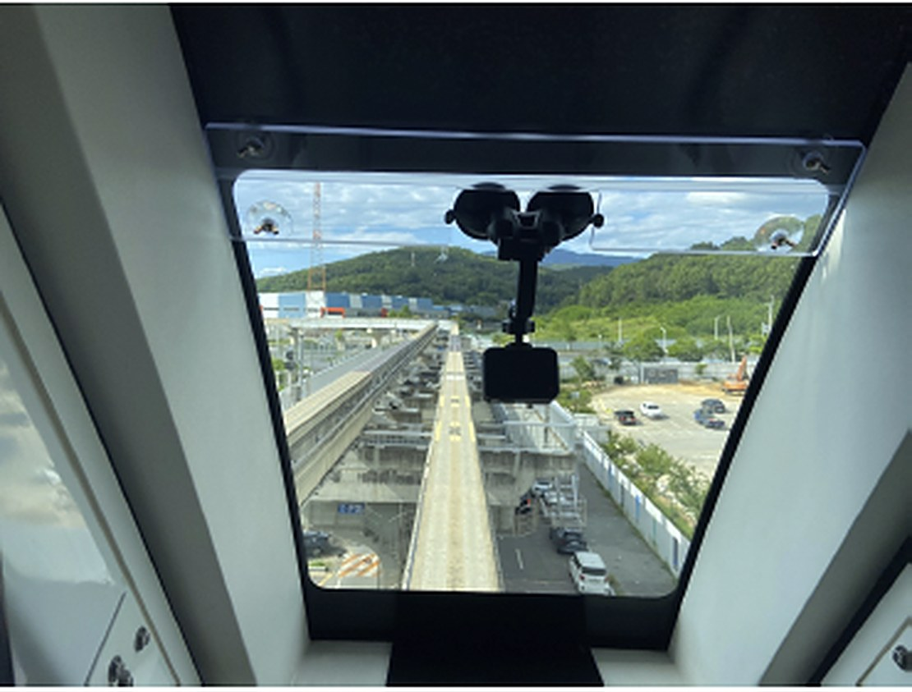
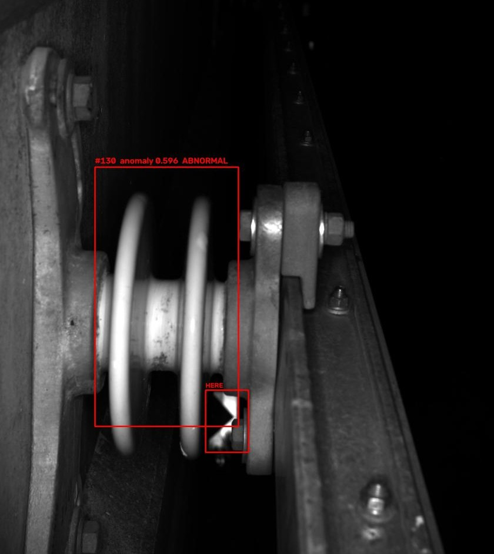
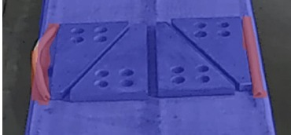

WSTORY는 AI와 IoT를 융합하여 철도 시스템의 정밀 진단부터 산업용 에너지 관리까지, 가동 중단 없는 고도의 정밀 제어 솔루션을 제공합니다.



루프 케이블 및 애자 결함 탐지를 위한 AI 기반 실시간 모니터링 시스템. 지능형 비전 알고리즘을 통한 예지 보전 체계 구축.
보일러 설비의 PLC와 직접 연동되는 데이터 수집 보드로 압력·온도·연료 효율을 실시간으로 수집하고, 클라우드 기반 관제 화면에서 설비 상태를 한눈에 확인합니다.
Modbus, EtherCAT 등 산업용 프로토콜을 지원하는 자체 개발 수집 보드로 기존 설비를 교체 없이 연결합니다.
현장에 가지 않아도 압력, 온도, 운전 상태를 실시간으로 확인하고 여러 설비를 한 화면에서 관리합니다.
운전 데이터의 변화를 지속적으로 분석해 이상 징후를 조기에 감지하고 설비 사고와 가동 중단을 예방합니다.
연료 사용량과 효율 추이를 분석해 낭비 요인을 찾아내고 에너지 비용 절감을 지원합니다.
* 관제 화면은 이해를 돕기 위한 예시입니다.
데이터 센터에 의존하지 않는 실시간 엣지 디바이스 분석으로 통신 부하를 최소화하고 즉각적인 대응을 보장합니다.